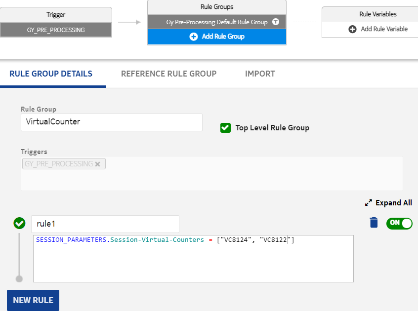
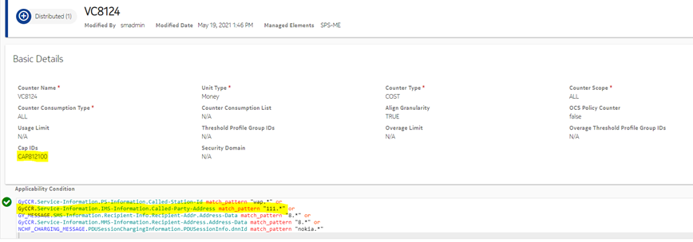
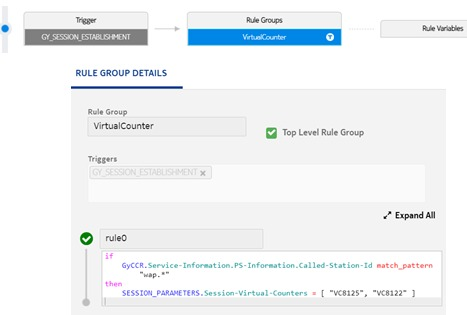

Session virtual counter enables the operator to configure caps for subscribers for the entire charging session, whether the session is data, IMS, or SMS/MMS. For example, for a subscriber it can be configured in such a way that he cannot spend more than 40 Euros from his account per session.
Session virtual counter can be configured in charging rules using the action attribute SESSION_PARAMETER.Session-Virtual-Counters. For more information about the applicable triggers, refere to section SESSION_PARAMETERS result context. See the following example for configuring two session virtual counters for a session:
In the applicability condition for the counter, configure it to apply only to a specific group of premium numbers by using the Called-Party-Address AVP.
Following figure shows another example of provisioning session virtual counters for Gy session in GY_SESSION_ESTABLISHMENT rule set:
By assigning a different counter and using conditions in rule or counter applicability condition, different caps can be applied for to the following:
When there are two usage types, session virtual counter can be configured to
count only primary rate usage or next rate usage. In this way, different CAP can be
applied to different usage types. This behavior is same as in normal counter. To
enable this, in counter applicability condition, the result context
RATING.Select-Counter-Usage can be used as
RATING.Select-Counter-Usage =
CounterUsageType_PRIMARY.